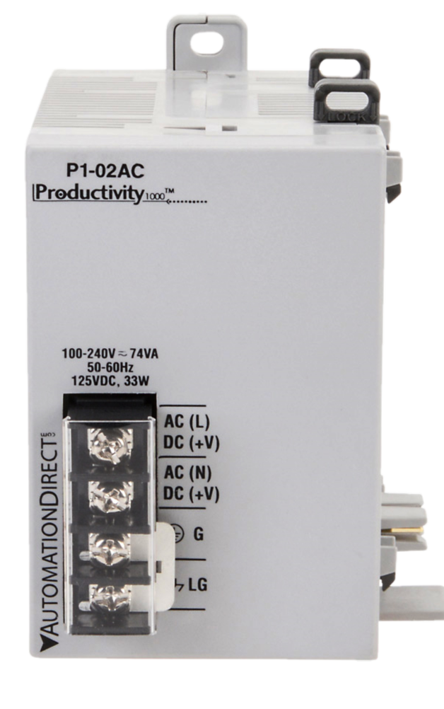

The ProductivityOpen P1AM-200 is an automation platform compatible with Productivity1000 Series I/O modules, P1AM Series shields, and Arduino MKR format shields. It can be programmed using the Arduino IDE or with the CircuitPython language. The board uses the SAMD51P20 Microcontroller.
Productivity1000 Series modules offer several types of industrial grade I/O:
Analog and Temperature Inputs
Analog Outputs
Discrete Inputs
Discrete Outputs and Relays
Specialty Modules
Compatible Functions
Below are several functions that are used to communicate with the Base Controller. Look through the examples included in the P1AM library and the source code to get a better understanding of these functions. If you're looking for functions to interface with modules, please check out the page for your module in the sidebar.
Base Controller
The P1AM-200 and accompanying library provide a connection to the Base Controller circuitry. This allows for communication with Productivity1000 Series I/O modules. You are required to provide external 24V or use a P1000 Series power supply when using the Base Controller.
Base Controller Pins
All Base Controller pins are internal to the P1AM-200 so no header pins are used for IO module communications.
Base Controller Watchdog
The Base Controller has a configurable watchdog that can be used to reset the CPU and the P1000 Modules in the base. If the Base Controller does not receive a message from the CPU in the configured time period, the watchdog will trigger and take action. This can be useful for if your program encounters an unexpected condition. Check out the watchdog examples for more information on how to use this feature.
CPU Features and Indicators
Toggle Switch
The toggle switch can be used like a normal digital input. It doesn't alter any behaviour on its own so make sure to write code to include any desired functionality.
pinMode(SWITCH_BUILTIN,INPUT); //Set Switch to be a digital input
Serial.println(digitalRead(SWITCH_BUILTIN)); //Read and print out state of switch. 1 is up and 0 is down.
RGB LED
This is a Neopixel-compatible LED that can be used for any purpose. It can be controlled by NEOPIXEL_PIN or 49 in Arduino and NEOPIXEL in CircuitPython.
Adafruit_NeoPixel pixels(1, NEOPIXEL_PIN, NEO_GRB + NEO_KHZ800); // Setup RGB LED
pixels.setPixelColor(0, pixels.Color(0, 150, 0)); // Set RGB LED to green (R, G, B)
pixels.show(); // Update RGB LED
PWR LED
When this LED is on it indicates the CPU is powered on via: USB, external 24V, VIN pin on the header, or a P1000 Series power supply.
Base LED
When this LED is on it indicates the Base Controller is powered and has been intialised by calling P1.init().
Note: External 24V or a P1000 Series power supply must be used for the Base Controller and modules to be powered.
Yellow LED
This LED is a user controlled LED like those found on Arduino boards. It can be referenced by using LED_BUILTIN or 32 and LED in CircuitPython. It can be controlled with the digitalWrite() function.
pinMode(LED_BUILTIN, OUTPUT); //Set LED to be a digital output
digitalWrite(LED_BUILTIN, HIGH); // Turn the LED on
delay(1000); // Wait 1 second
digitalWrite(LED_BUILTIN, LOW); // Turn the LED off
delay(1000); // Wait 1 second RTC
The P1AM-200 contains an external RTC (real-time clock) backed by a supercap. This allows the board to keep track of time even when it is powered off and should function up to 12 hours.
microSD Card
The microSD card slot can be used to read and write files. This can be useful for logging errors and storing any readings.
The CS pin is 28 or SDCARD_SS_PIN in Arduino and SD_CS in CircuitPython.
ATECC608 Cryptographic co-processor with secure hardware-based key storage
The ATECC608 secure element allows for secure key storage and cryptographic functions. It allows for fast and secure SSL/TLS connections when using the P1AM-ETH shield.
This allows for secure communication with cloud services such as AWS IoT Core. The ATECC608 can be configured using the ArduinoECCX08 library
and is typically used with the ArduinoBearSSL library or other SSL/TLS libraries.
Note: TLS connections over ethernet are not currently supported in CircuitPython
External EEPROM
The P1AM-200 contains an external 2k-bit EEPROM that can be used to store data that needs to be retained when power is lost. Additionally, this EEPROM contains a unique MAC address that can be used to programmatically configure the MAC address of the P1AM-ETH shield.
Reset Button
Tapping the reset button once can be used to manually reset code execution, the Base Controller, and all P1000 Series modules.
Quickly double tapping the reset button will put the board into bootloader mode. This mode is indicated by a "breathing"
pattern on the yellow LED. This mode can be used to recover a board that has reached a hard fault due to bad code. Once
in this state, the COM port will change so it is required that you select the new COM port from the tools menu and re-upload your code.
Additionally, the board will enumerate as a USB mass storage device that can be used to load UF2 files.
Control Pins and Buses
| Name | Arduino | Arduino Library | CircuitPython | CircuitPython Library |
|---|---|---|---|---|
| Toggle Switch | SWITCH_BUILTIN(31) | digitalRead() | board.SWITCH | DigitalInOut.value |
| Yellow LED | LED_BUILTIN(32) | digitalWrite() | board.LED | DigitalInOut.value |
| MicroSD | SDCARD_SS_PIN(28) | SD | board.SD_CS | Adafruit_CircuitPython_SD |
| ATECC608* | Wire | ArduinoECCX08 | board.SCL, board.SDA | Adafruit_CircuitPython_ATECC |
| EEPROM | INTERNAL_EEPROM_PORT(Wire1) | AT24MAC_EEPROM | board.ATMAC_SCL, board.ATMAC_SDA | CircuitPython-AT24MAC |
| RGB LED | NEOPIXEL_PIN(49) | Adafruit_NeoPixel | board.NEOPIXEL | Adafruit_CircuitPython_NeoPixel |
| RTC | INTERNAL_RTC_PORT(Wire1) | PCF8563_RTC | board.RTC_SCL, board.RTC_SDA | Adafruit_CircuitPython_PCF8563 |
MKR Expansion Header Pins
| Function | Pins |
|---|---|
| GPIO | A0-A6, 0-14 |
| Analog Input | A0-A6 |
| Analog Output | A0, A1 |
| PWM | 0-8, 10, 12, A1, A2 |
| Interrupt* | 0, 1, 4-8, A1-A4 |
| SPI | 8, 9, 10 |
| I2C | 11, 12 |
| UART | 13 and 14, 0 and 1 |
| 5V | 5V supply output |
| Vin | 5V regulated supply input |
| VCC | 3.3 V supply output |
| GND | Ground |
| RST | Reset |
| Aref | Analog Input Reference |
Interrupt functionality not available when using CircuitPython. Do not exceed 3.3 V on any I/O pin.
Do not exceed 7mA on any I/O pin.
Do not apply power to 5V or VCC
Powering the P1AM-200
System Supplies
The P1AM-200 can be powered several different ways. When an external 24V or a P1000 Series supply is connected and turned on the power from USB and VIN is disconnected, but the data lines are still available for programming and monitoring as normal. Additionally, if only VIN and USB are connected, the power from USB is disconnected. WARNING: DO NOT CONNECT EXTERNAL 24V AND A P1000 SERIES POWER SUPPLY AT THE SAME TIME
P1000 Series Power Supplies offer noise filtering, electrical isolation, and an easy connection for P1AM systems. There are both AC and DC
input power models.
Power Supplies can be purchased here.
It is important to evaluate your system and determine the amount of power it will need. If you are using any Productivity1000 Series modules, you should budget 1.25W for each slot from your external 24V or P1000 Series supply. If you are using any shields or devices connected to the MKR header, you should refer to the table below to make sure you are within the proper specification. Depending on the power source used, the VCC(3.3V) pin and 5V pin will have different current limits. Additionally, they have a combined total power limit.
| Source | P1000 Modules | P1AM Shields | MKR Shields |
|---|---|---|---|
| USB | X | ✔ | ✔ |
| VIN | X | ✔ | ✔ |
| P1000 Series Supply | ✔ | ✔ | X |
| External 24V | ✔ | ✔ | ✔ |
| Power Source | 5V | 3.3V | Max Combined Power |
|---|---|---|---|
| USB | 330mA | 500mA | 1.65W |
| VIN (Pin Header) | 600mA | 1A | 3.3W |
| P1000 Series Supply OR external24V |
850mA | 1.28A | 4.25W |
Microcontroller: SAMD51P20
Clock: 120MHz
Flash: 1MB
Ram: 256KB
Storage: microSD, EEPROM, 16MB SPI Flash
RTC: Supercap backed external RTC
P1000 I/O Modules: Up to 15. Requires external 24V or P1000 power supply.
Additional Resources:
Data Sheet
P1AM-200
on AutomationDirect.com